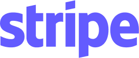
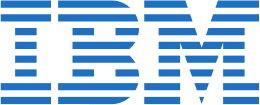
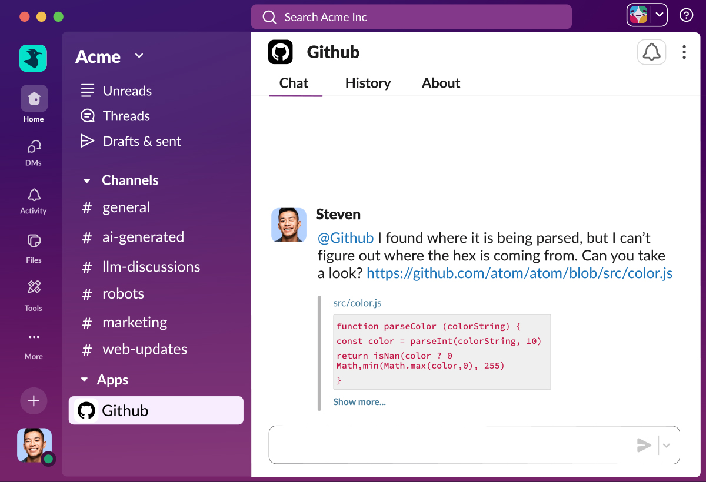
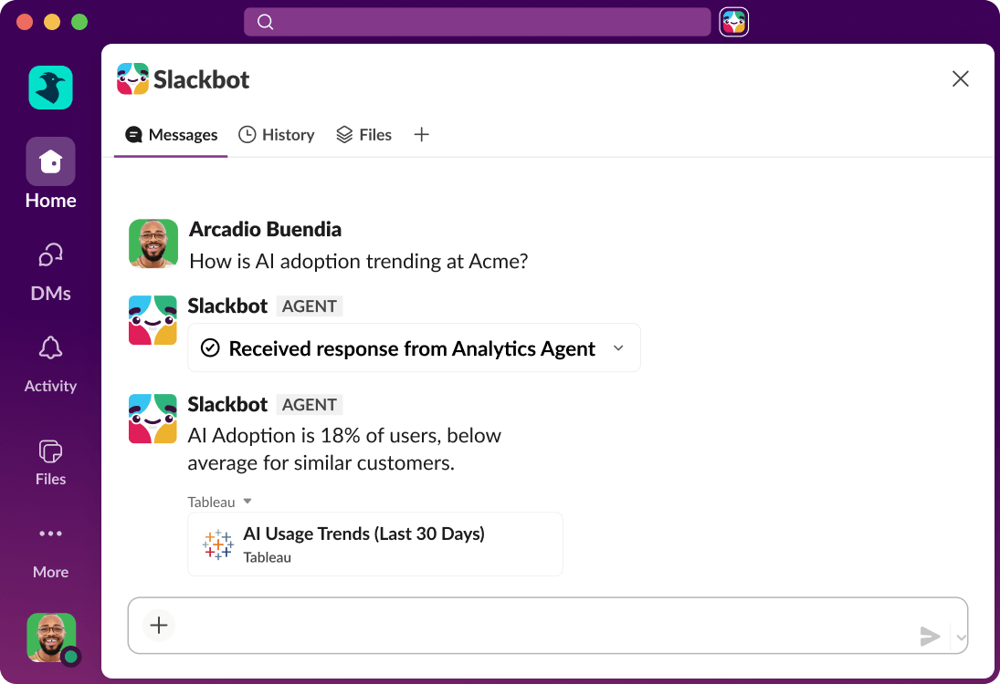
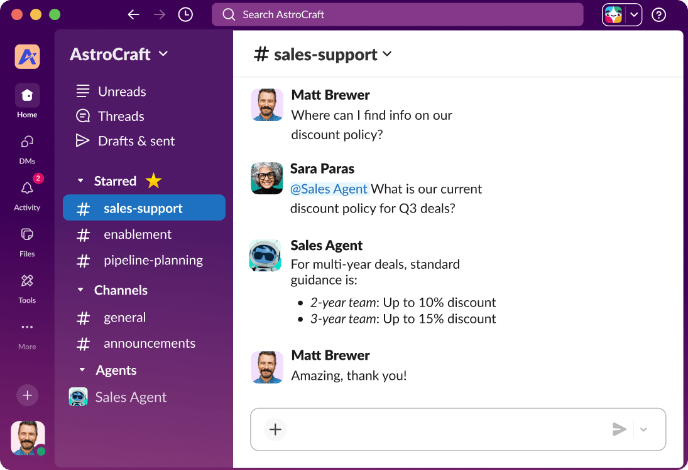
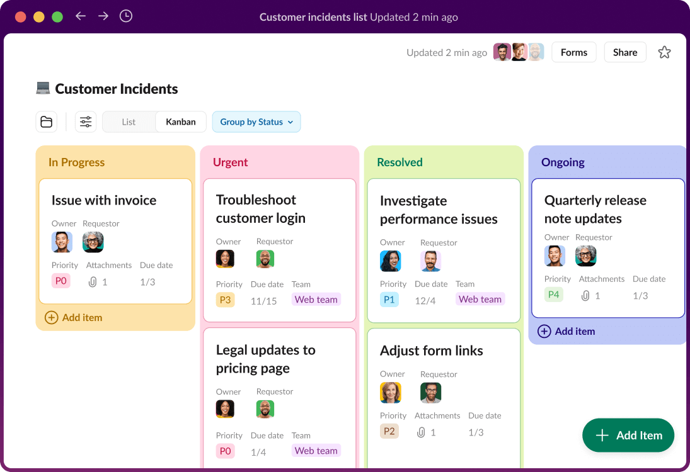
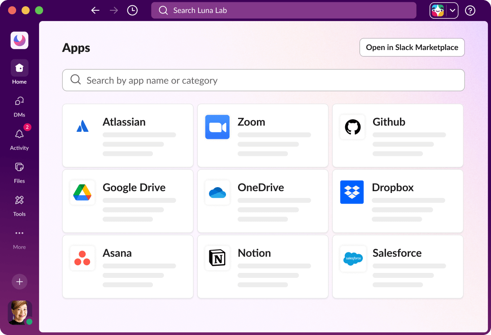

of users say Slack helps them stay more connected
All your people and AI agents working together.
Slack connects your team. Slackbot multiplies what they can do.
Trusted by top teams


Reimagine what’s possible with AI and agents.
AI in Slack doesn’t make you think, it helps you do. It summarizes and searches based on actual conversations, and with it, makes every app and agent more helpful and contextually aware than ever.

What’s new in Slack
See all updates ↗NEW FEATURE
Slack Code
Coding agents can now work with your whole team, not just you.
NEW FEATURESlackbot Deep Research
Slackbot can now dig deep on open-ended questions, not just quick ones.
NEW FEATURESalesforce approvals in Slack
Salesforce approvals can now be routed straight into Slack.
NEW FEATURESlackbot Big Mode
Slackbot just got a full-screen workspace built for deeper work.
NEW FEATURESlackbot Skill Sets
Slackbot skills can now travel together, not one at a time.
Knowledge
Give everyone instant context.
Get access to every file, decision, and conversation, so you can build on past work instead of recreating it.
Meet Slackbot: Your personal agent for work.
Slackbot isn't just any AI. It's AI that knows you and your team. It coordinates work across your apps and agents so one conversation gets work done.
Learn more ↗
People
Let your people connect like people.
Slack’s conversational UI makes collaborating more approachable, whether you're working with a colleague or an agent.
It all starts with a channel.
Channels are flexible, transparent spaces for working with your team, AI assistants, and agents.
Learn more ↗
Process
Manage all your work from one place.
Automate daily stand-ups, project updates, and approvals so your team can focus on growth instead of guesswork.
Anyone can automate in Slack.
By click or by code, Slack makes it easy for anyone to build time-saving automations of their own.
Learn more ↗
Platform
Secure. Scaleable. Silo-free.
Our flexible, open platform is purpose-built for bringing the best agents and AI to every business, and can be tailored to fit however your teams work best.
From Atlassian to Zoom. Google Drive. ChatGPT. Vercel. Box. Asana. Workday.
You name it, it works in Slack.
Learn more ↗
The most innovative companies run their business in Slack.
We’re in the business of growing businesses.
The average number of apps used by teams in Slack
of users say Slack helps them collaborate more efficiently
Millions of people love to work in Slack.
Messages sent daily
Slack Connect users working directly with external teams each week
Daily Workflows
Apps actively used each week
Source: Slack’s public 2026 homepage; figures use its FY25 usage data and customer surveys.